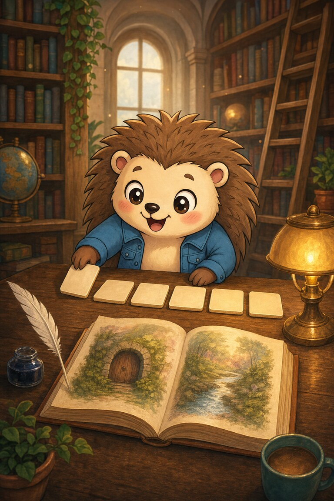
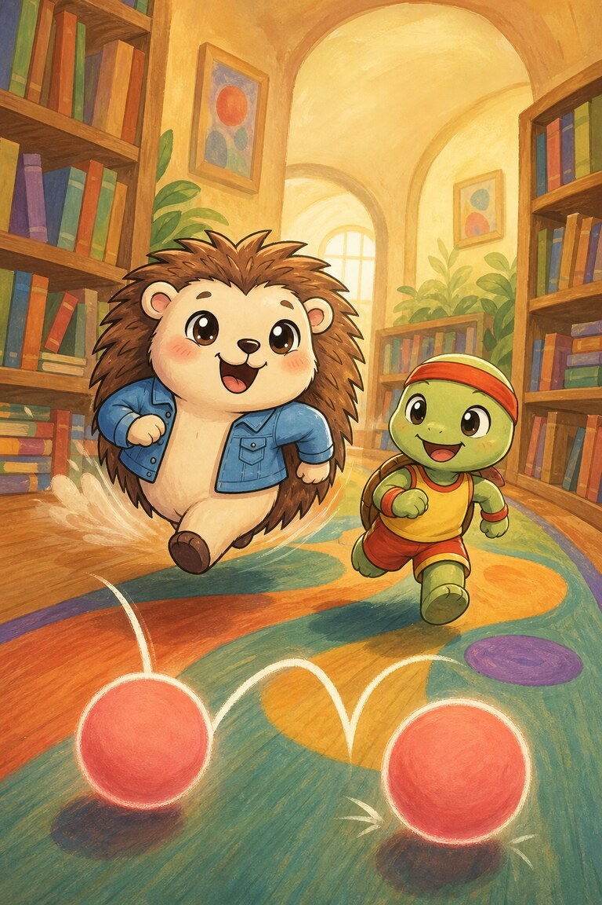
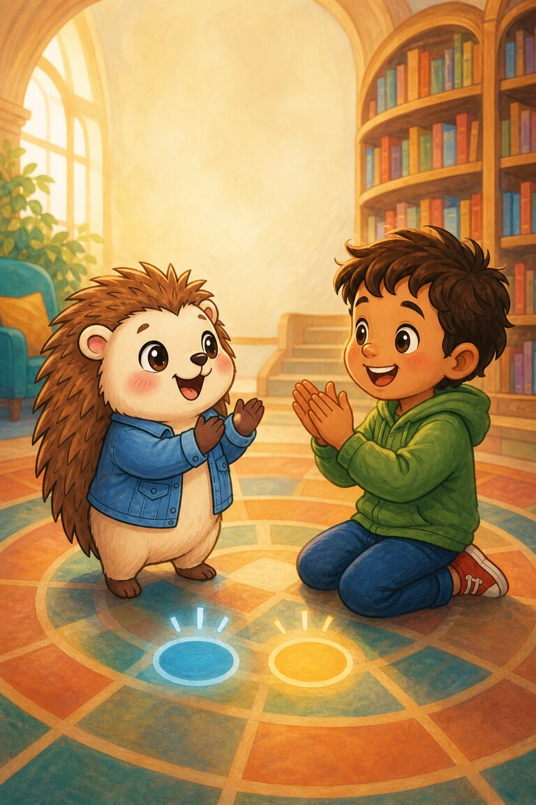
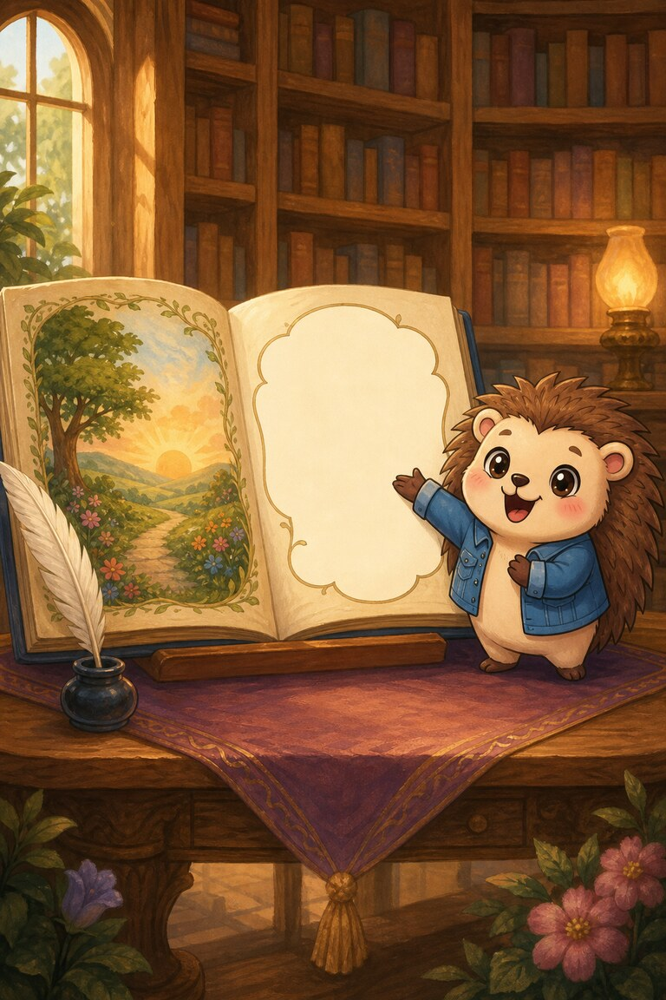

Page 1 of 5
Quill-Berry finds a poem with its endings missing. “The rabbit is jump___; the painter paint___,” she reads.
A five-page library puzzle for practising endings like -ing, -ed and -er, and clapping two-beat words.
Read together: practise the focus sounds with an adult. This story uses wider vocabulary and is not a controlled independent decodable stage.
6 printed pages · 1.0 MB · A4 or US Letter. Download PDF · Open PDF to printOpens in a new tab. Use the PDF viewer's Print control. To use less ink, read online and choose only the questions on page 6 in Print.
Quill-Berry finds a poem with its endings missing. “The rabbit is jump___; the painter paint___,” she reads.

She adds ing to jump and ed to paint. Jumping is happening now; painted has already happened.

The next clue says, “A fast runner becomes a faster runner.” Quill circles er and reads the word in two beats: fast-er.

A reader comes calling from the hall. Together they clap the beats in helping, resting, and looking.

Quill restores every line, then leaves one blank for the next reader. Words can keep growing when endings join them.
Endings. Quill completes the poem by joining endings such as ing and ed to its words.
painted. The ed ending in painted shows that the action has already happened.
SnackPack Sentences & Spelling has the full Reading Trail, longer stories, word packs and eight literacy games.
Explore another book · read togetherTed-E-Bear’s Blanket Fort
Know a family or class who would enjoy it?